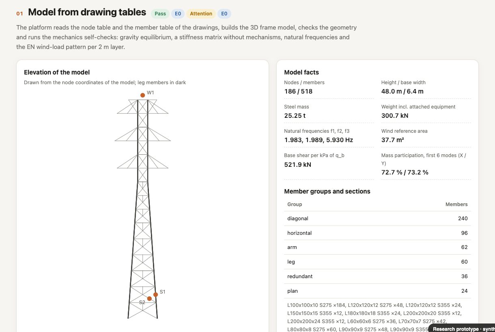
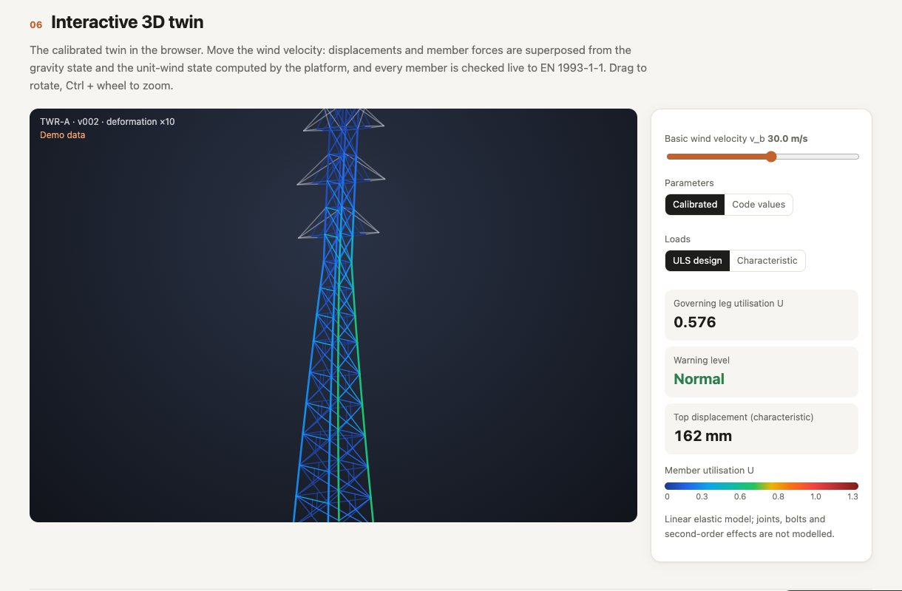
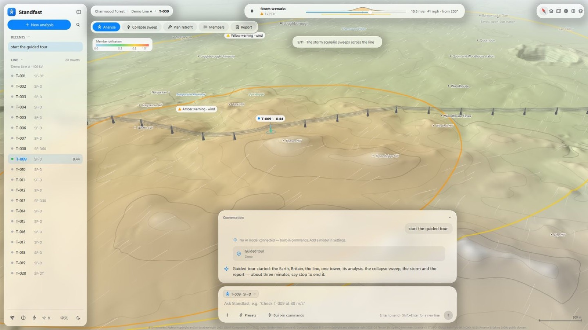
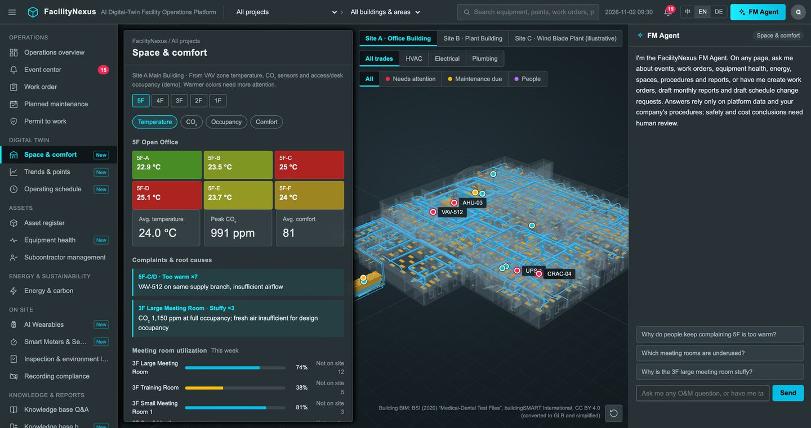
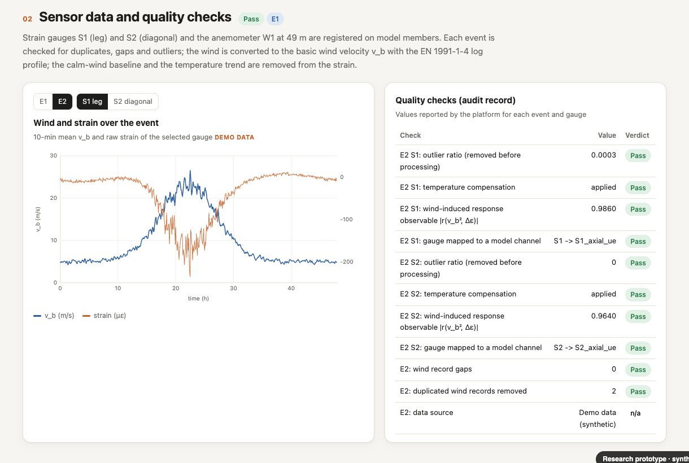

Automated modelling
From drawings and point clouds to a checkable model
Vector PDF drawings, drawing tables and laser scans become a member-level model with its own self-checks, and an IFC model from the same source.
Platforms
Each turns data an owner already has into an answer an engineer or an operator can check, and keeps a full audit trail from input to result. Use them through our advisory work, license one for your own team, or bring one into a joint research project.

For a single structure, in depth. Project files, drawings and sensor data go in; an auditable digital twin, a capacity assessment and a ranked repair list come out, ready for an engineer to sign off.

For a whole line, at once. Standfast puts an overhead line on real terrain, runs a storm across it and shows, tower by tower, how close each structure is to failure, and what strengthening would change.

For a building or a campus in operation. FacilityNexus puts the facility on a 3D twin base and links events, equipment health and the operations knowledge base to it, with an AI assistant on every page.
Core capabilities

Vector PDF drawings, drawing tables and laser scans become a member-level model with its own self-checks, and an IFC model from the same source.

Each gauge is registered on its member, its records are checked and corrected, and the twin is calibrated and validated against measurement.
Access
We run the platform on your asset and hand over a report and evidence pack.
Your engineers or operators use it directly, with set-up, training and support.
Universities and companies use it in research and innovation projects, with papers and intellectual property agreed at the start.